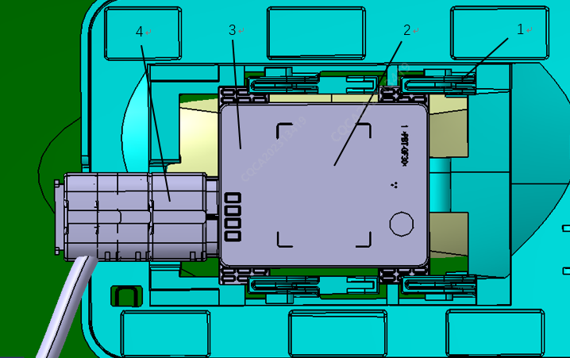
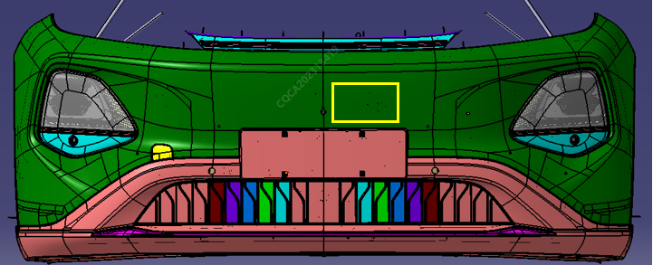

前向毫米波雷达总成安装在前保险杠总成内侧的支架上（下图为安装示意图），该支架通过焊接的方式固定在车辆的前保险杠内，当需要更换前向毫米波雷达总成硬件时，需要先拆卸前保险杠 拆卸和安装前保险杠； 后方可更换。

|
序号 |
部件 |
序号 |
部件 |
|
1 |
前向毫米波雷达安装支架 |
2 |
前向毫米波雷达标签位置 |
|
3 |
前向毫米波雷达总成 |
4 |
前向毫米波雷达接插件 |
前雷达对安装布置区域的前保险杠总成有特殊要求，详细说明如下，请严格遵循，否则将导致雷达工作异常
全新Q05车型在前保险杠总成本体后方安装有雷达传感器
在维修保险杆本体时，为避免干扰雷达传感器请遵循以下要求
1、雷达区域（图1）对应的保险杠外表面不得加装车衣、车膜、粘贴标签等遮挡物
2、加装牌照框不得影响雷达区域（图1）（设计状态车牌已贴近雷达区域，理论上不允许加装车牌，车牌或车牌框进入图1区域将会导致雷达波无法穿透，引起雷达功能失效）
3、切勿在雷达区域（图1中黄框范围）内执行任何维修作业。维修作业包括添加塑料过滤器、塑性焊接或合订以及打磨车漆边缘等；
4、前保险杆本体饰板雷达布置区域（图 1）处的车漆最大厚度参考下表要求
| 序号 | 颜色名称 | 底漆施工厚度 | 色漆施工厚度 | 清漆施工厚度 | 出厂件喷漆总厚度 | 返修允许最大厚度 |
| 1 | 星辰白 | ＜12微米 | ＜10微米 | ＜45微米 | ＜92微米 | ≤104微米 |
| 2 | 茵茵绿 | ＜12微米 | ＜12微米 | ＜45微米 | ＜92微米 | ≤104微米 |
| 3 | 月华银灰 | ＜12微米 | ＜20微米 | ＜45微米 | ＜92微米 | ≤104微米 |
| 4 | 霞光紫 | ＜15微米 | ＜20微米 | ＜45微米 | ＜92微米 | ≤104微米 |
| 5 | 星际灰 | ＜12微米 | ＜17微米 | ＜45微米 | ＜92微米 | ≤104微米 |
1）25微米等于1密耳
2）可通过以下任一方法判断车漆厚度
1))使用塑料专属测量工具，如 PosiTector200或PhaseIIUTG-2900超声波测厚仪（可根据现场实际情况选择，保障精度满足1um即可）；
2))打磨组件，露出内部塑料，查出车漆层数，判断前保险杆本体饰板是否已经喷涂两层涂料。 如果某一处前保险杆饰板需要3次的补漆作业，那么在补漆前，必须清除雷达区域（图 1）中内部塑料上的所有车漆，或者更换前保险杠本体。图1黄框区域以外的前保险杠表面返修，不做特殊要求；
3）如果为保险杠饰板重新喷漆导致雷达区域内的薄膜厚度大于上述表格的要求，那么请先清除雷达区域（ 图1中黄框范围）中的全部车漆后再重新喷漆。如果无法按要求完成修复，请直接更换前保险杠总成
返修时，请避免清除雷达区域保险杠本体油漆下的塑料材质。雷达传感器是基于保险杠本体出厂厚度进行校准的，如果清除该区域中的多余塑料可能导致雷达故障
如更换新的保险杠总成，请遵照使用保险杠制造商准备的裸色本体总成

图1